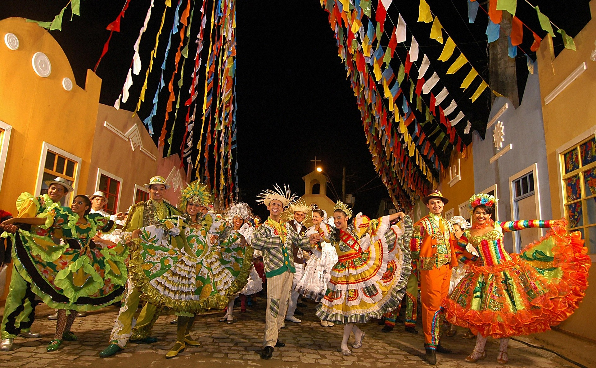

DESENVOLVIMENTO WEB
Site Festa Junina
Projeto acadêmico de desenvolvimento web com temática de Festa Junina, criado para praticar a estruturação de páginas, estilização e interatividade.
HTML
CSS
JavaScript
Ver projeto no GitHub ↗